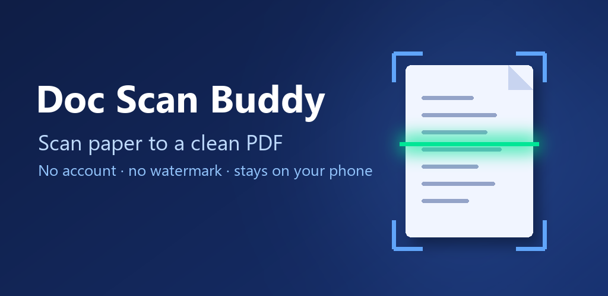
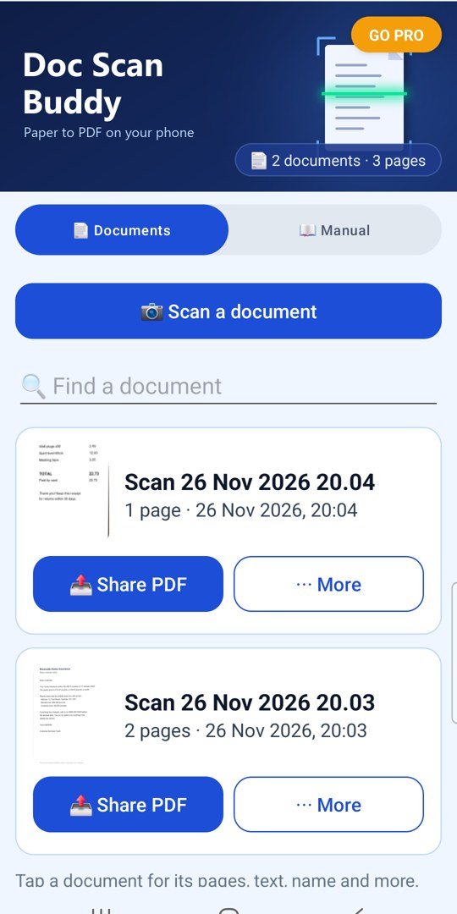
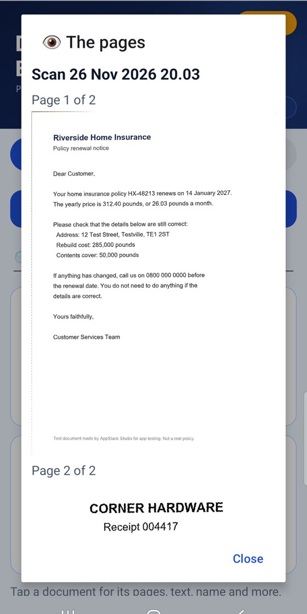
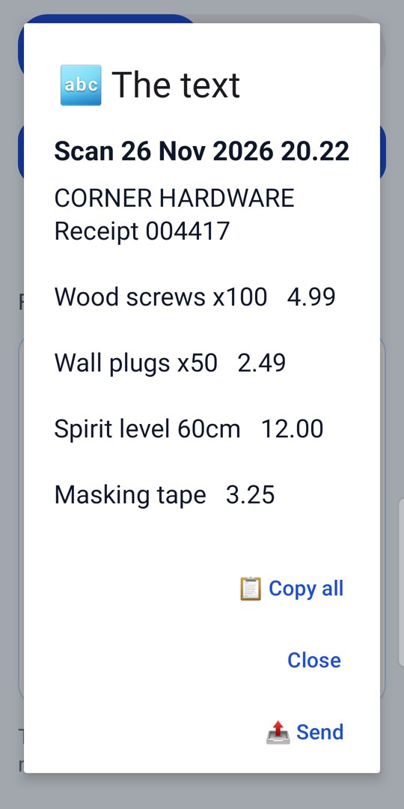
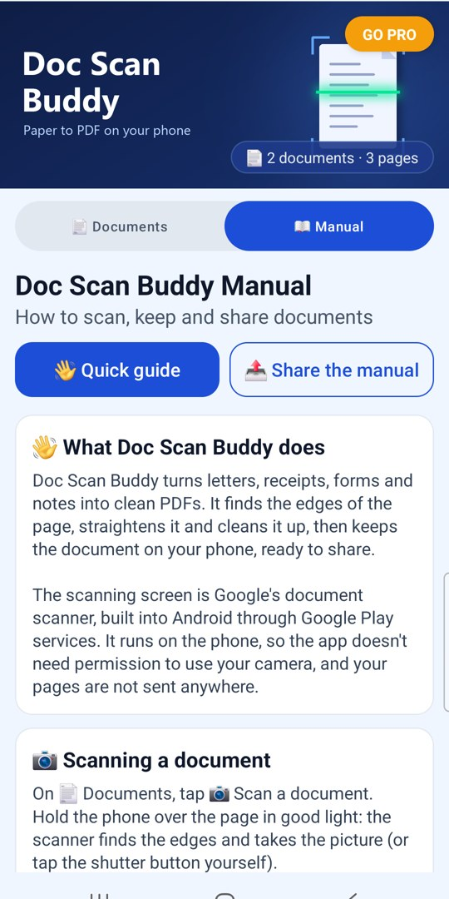

Everything below is the same text as the Manual in the app (📖 Manual tab).
Doc Scan Buddy turns letters, receipts, forms and notes into clean PDFs. It finds the edges of the page, straightens it and cleans it up, then keeps the document on your phone, ready to share.
The scanning screen is Google's document scanner, built into Android through Google Play services. It runs on the phone, so the app doesn't need permission to use your camera, and your pages are not sent anywhere.
On 📄 Documents, tap 📷 Scan a document. Hold the phone over the page in good light: the scanner finds the edges and takes the picture (or tap the shutter button yourself).
Before saving you can retake a page, crop it, turn it, add more pages, or use a filter to clean up shadows and stains. To scan a page you already photographed, use the scanner's gallery button.
Tap Save: the document appears at the top of the list, named with the date and time. The first time, Android may take a moment to get the scanner ready.
Tap a document to share its PDF, look at its pages, rename it or delete it.
Type in 🔍 Find to show only the documents whose names have those words.
With Pro, 🔤 Read the text turns the words on the pages into text you can copy, paste or send. It works on the phone, without the internet.
It works best on clear printed text in good light. Handwriting and faded print may come out with mistakes, so check anything important. Once a document's text has been read, 🔍 Find also looks inside it.
Free: unlimited scans, the PDF of every document, sharing, renaming and finding by name. No ads, no watermark.
Pro (one payment, no subscription): reading the text, finding words inside documents, sharing pages as pictures, and combining documents.
Tap GO PRO at the top. Restore purchase gets Pro back on a new phone with the same Google account.
No account, no sign-in, and no ads. Your documents are kept only in the app's own storage on this phone. Doc Scan Buddy has no servers: scanning and reading the text happen on the phone. A document only leaves the phone when you share it yourself.
Uninstalling the app deletes the documents in it, so share or save anything you want to keep first. Google Play handles the Pro purchase.
Doc Scan Buddy v1.0 (Build 1)
Publisher: AppStack Studio
| Question | Many scanner apps | Doc Scan Buddy |
|---|---|---|
| Watermark | Often on the free PDFs | Never: every PDF is clean, free or Pro |
| Account | Often a sign-in or a cloud upload | No account; documents stay on your phone |
| Camera permission | Usually needed | Not needed: Google's scanner hands the app only the pages you save |
| Price | Weekly or yearly subscriptions | Free scanning; Pro is one payment for life (no subscription) |

1. Documents
Every scan with its pages, ready to share as a PDF.

2. The pages
Straightened, cleaned pages, one under the other.

3. Read the text (Pro)
The words on the page as text you can copy or send.

4. Manual
The full guide in the app, also as a PDF.
Screenshots: Doc Scan Buddy 1.0 on Samsung Galaxy phones, with a made-up test letter and receipt.